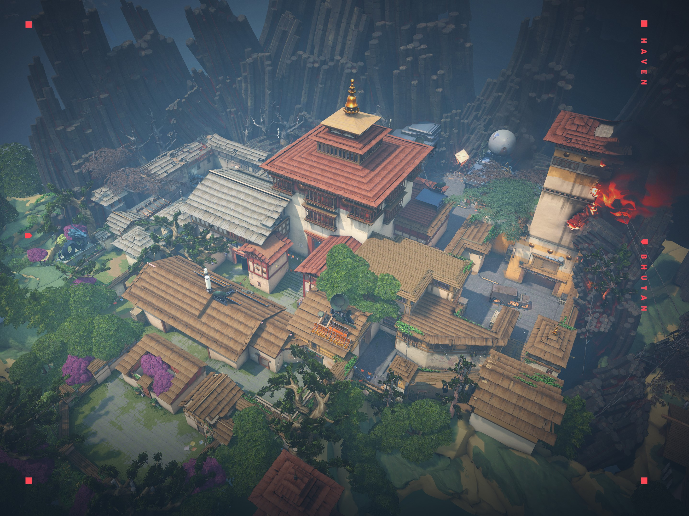
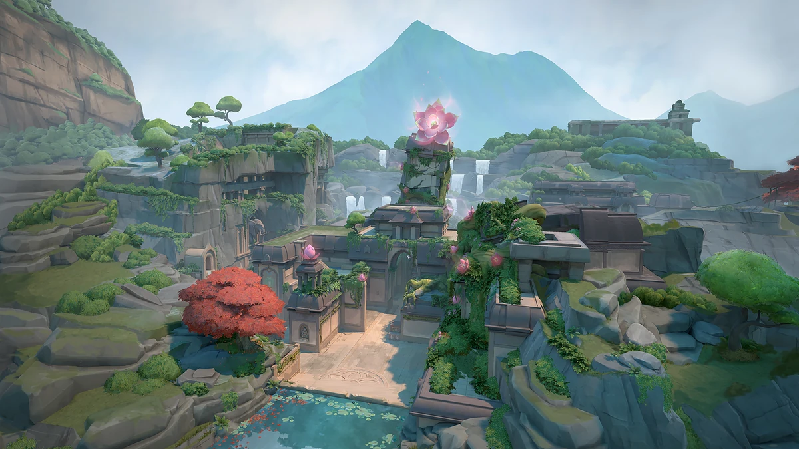

МАПИ
ASCENT

Дві точки Ascent відокремлені один від одного відкритим майданчиком для дрібних позиційних сутичок і відстріл противників.
Кожна точка може бути посилена герметичними дверима;
після їхньої активації вам знадобиться або знищити їх, або знайти інший шлях на точку. Ні кроку назад!
Порада: контролюйте центр, оскільки це дозволяє швидко реагувати на атаки на сайти. Використовуйте агента з димами або контролем для підтримки.
SPLIT

На цій карті велике значення має заняття висот.
Дві точки відокремлює один від одного центр з високими позиціями, на які можна швидко піднятися мотузками.
Контроль над кожною точкою допоможуть утримати вежі, що височіють над ними. Не забувайте поглядати вгору.
Порада: використовуйте висоту на свою користь. Ставте димові гранати на ключових точках, щоб обмежити видимість.
ICE-BOX

Вам належить битися на закинутій секретній арктичній базі Kingdom. Точки для встановлення бомби захищені снігом та металом.
Тут вам знадобляться хитрість і спритність.
Скористайтеся тросами, щоб залишитися непоміченими або застати ворога зненацька.
Порада: використовуйте висоту для захисту від ворогів. Застосовуйте здивування з несподіваних позицій, щоб створити перевагу.
HAVEN
Стіни забутого монастиря стрясає шум бою агентів, що борються за контроль над трьома точками. Території для захоплення більше, але захисникам набагато легше агресивно пушити супротивника.
Порада: зосередьтеся на координації з командою, оскільки більше сайтів означає більше можливостей для ворогів. Розподіліть ролі, щоб контролювати всі три зони.
BREEZE
Ласкаво просимо до тропічного раю. Милуйтеся древніми руїнами, досліджуйте морські печери і приводьте з собою друзів.
Тут на вас чекають відкрита місцевість та перестрілки на далеких дистанціях, так що допомога зайвої точно не буде.
Головне – вчасно прикрити фланги.
Порада: слідкуйте за відкритими зонами, коли атакуєте, і використовуйте димові гранати для захисту. Не забувайте про фланги.
FRACTURE
Секретний дослідницький центр, розділений надвоє через невдалий експеримент із радіанітом.
Ця незвичайна карта відкриває різні можливості для захисників: зупиніть атакуючих зненацька на їхньому боці або задраюйте люки, щоб пережити штурм. Вибір за вами!
Порада: використовуйте можливість розділити команду на дві частини для контролю обох сторін. Застосовуйте агента, який може швидко переміщатися між зонами.
LOTUS
Загадкова споруда випромінює давню астральну енергію. Велична кам'яна брама дає простір для тактичного пересування. А ще за цими воротами ховаються ще 3 таємничі місця.
Порада: використовуйте обертові двері для створення сюрпризів. Спостерігайте за позиціями ворогів, щоб контролювати важливі зони, і використовуйте командну координацію для захоплення сайтів.
PEARL
Ця карта з двома точками, де захисники чекають на атакуючих внизу, розташована в мальовничому підводному місті.
На Pearl немає незвичайних механік лише цікавий ландшафт. Воюйте на невеликому міді або в довгих бічних проходах на нашій першій карті на Землі "Омега".
Порада: зосередьтеся на контролі центральної зони, щоб забезпечити доступ до обох сайтів. Використовуйте димові гранати і флешки для захисту від відкритих простору, щоб забезпечити безпечний прохід вашій команді.
SUNSET
Аварія на місцевому об'єкті Kingdom поставила під загрозу цілий район. Перекусіть у улюбленій забігайлівці та вирушайте битися на класичній міській карті з трьома лініями.
Порада: використовуйте будівлі для укриття та контролюйте фланги.
Спостерігайте за відкритими зонами, оскільки вони можуть стати небезпечними.
Командна координація та використання димових гранат допоможуть вам контролювати ключові точки та забезпечити безпечний доступ до сайтів.
BIND

Дві точки. Жодного міду. Куди ж іти, праворуч чи ліворуч? Що б ви не обрали, на кожному напрямі є прямий маршрут для нападу та односторонній телепорт для виходу за спини супротивників.
Порада: Використовуйте портали для швидкого переміщення, щоб оточити супротивників. Переконайтеся, що ваша команда знає, коли і куди ви плануєте перейти.